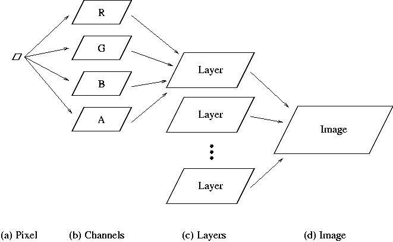

Recall that images are constructed from layers and layers from pixels. However, there is another important component in the image structure hierarchy. Layers can be decomposed into sublayers called channels. Layers are constructed of one to four channels. In this book almost all our work is performed on RGB images. For these types of images each layer consists of four channels known as R, G, B, and A. These are the red, green, blue, and alpha components of a layer, respectively. The R, G, and B channels contain the color information about the layer, and the A channel describes how opaque the layer is to what is behind it. An exception to this rule is that the default, background layer of a newly created or freshly opened RGB image contains no alpha channel.
A complete diagram of the image component hierarchy is illustrated in
Figure 2.6.
|  |
Like for layers, there is a dialog for viewing channels called the
Channels dialog . This is accessed by clicking on the Channels tab in the Layers & Channels window (see
Figure 2.4). The Channels dialog is
shown in Figure 2.7.
Also note that there are just three channels in this dialog, not three channels for each layer. These channels represent the global red, green, and blue of the image. For multilayer images, the R, G, and B channels of each individual layer are not accessible in the Channels dialog. They can be extracted for an individual layer by deleting the other layers or by copying and pasting the layer to a separate image window. Another possibility for accessing the individual color channels of a layer is to use the Decompose function, which is discussed in Section 4.5.3.
Any of the R, G, and B channels can be made inactive by clicking on the channel title. Doing so means that subsequent operations in the image window affect only the remaining active channels . The visibility of the channels, like for layers, can be toggled using the Eye icons.
The Channels dialog can be used to create additional channels for an image. These are called Channel Masks, and a discussion of these is deferred to Section 4.1. As a final note, Figure 2.6 suggests that the alpha component of a layer should be found somewhere in the Layers or Channels dialogs. This is indeed correct, but this topic is deferred to Section 4.2.